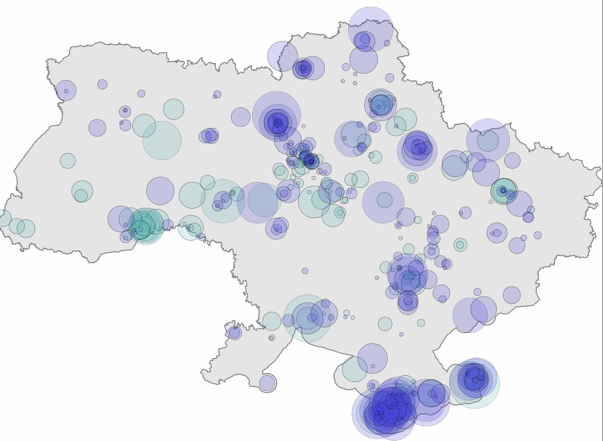
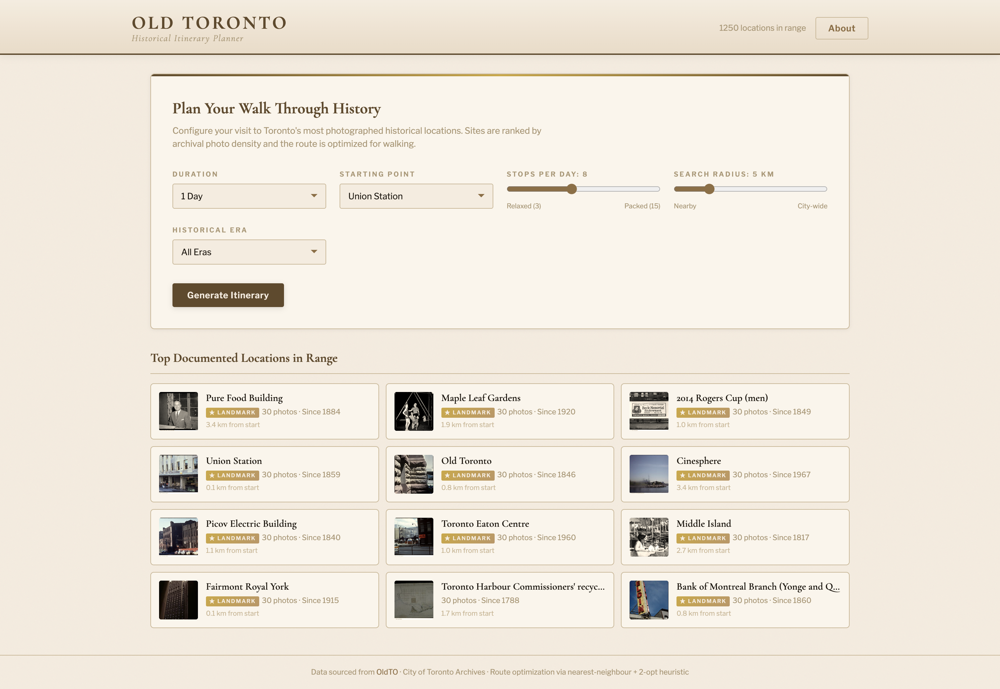
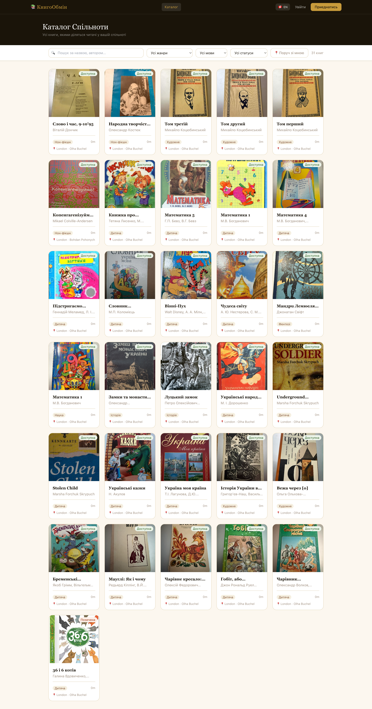
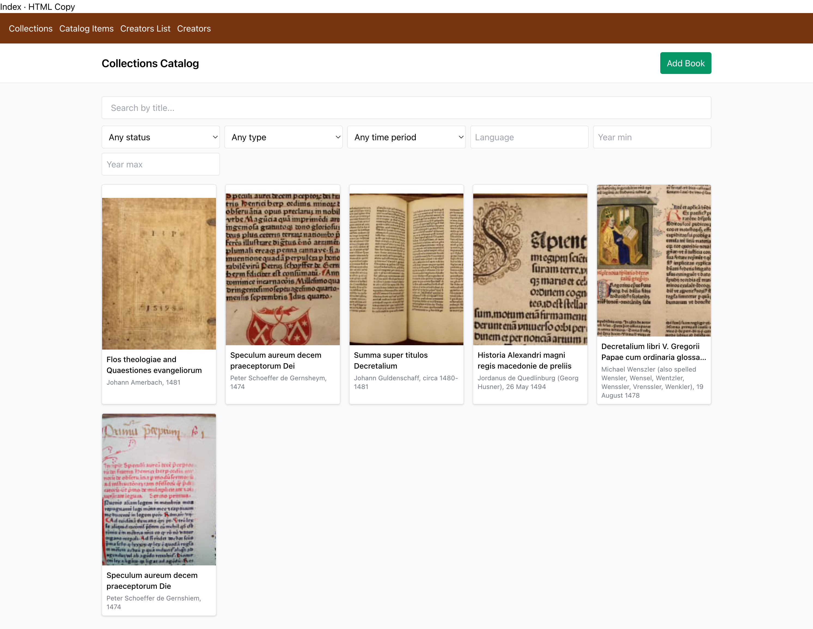

Measuring diversity in library collections using data science methods. Includes a supporting research paper and interactive visualization tools for collection analysis and social network approaches to libraries.

Interactive bilingual visualization of Ukrainian archaeological artifacts and cultural heritage objects held in Russian museums, including the State Historical Museum and the Hermitage.

Interactive walking tour planner drawing on 37,000+ archival photographs. Explore Toronto's history through era-based routes, density maps, and archival image slideshows.

Bilingual (English/Ukrainian) peer-to-peer platform for sharing and lending Ukrainian-language books within the Canadian diaspora. Search, borrow, and connect with readers nearby.

Cataloging system for rare Ukrainian books and incunabula applying metadata standards including MARC, Dublin Core, and IIIF. Features OCR, creator authority records, and structured metadata for historical and archival collections.
Temporal visualization methodology for tracking cultural heritage data over time. Covers data sources, algorithms, temporal analysis approaches, and validation for the Stolen Treasures project.